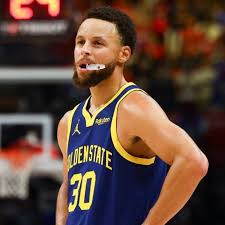
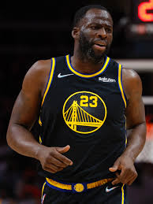
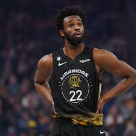
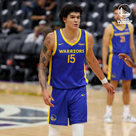
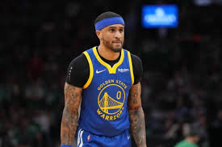
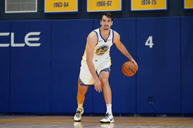
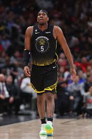
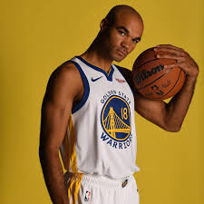
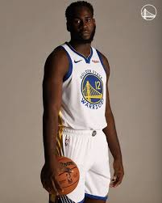
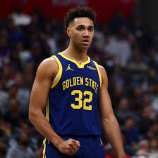

Stephen Curry

Nome: Wardell Stephen Curry II
Posição: Armador
Altura: 1,88 m
Peso: 84 kg
Número da Camisa: 30
Nascimento: 14 de março de 1988 - Akron, Ohio, EUA
Klay Thompson
Nome: Klay Alexander Thompson
Posição: Ala, Ala-armador
Altura: 1,98 m
Peso: 100 kg
Número da Camisa: 11
Nascimento: 8 de fevereiro de 1990 - Los Angeles, Califórnia, EUA
Draymond Green

Nome: Draymond Jamal Green Sr.
Posição: Ala-pivô, Pivô
Altura: 1,98 m
Peso: 104 kg
Número da Camisa: 23
Nascimento: 4 de março de 1990 - Saginaw, Michigan, EUA
Jonathan Kuminga
Nome:Jonathan Malangu Kuminga
Posição: Ala-pivô, Pivô
Altura: 2,01 m
Peso: 102 kg
Número da Camisa: 00
Nascimento: 6 de outubro de 2002 - Goma, República Democrática do Congo
Andrew Wiggins

Nome: Andrew Christian Wiggins
Posição: Ala, Ala-pivô
Altura: 2,01 m
Peso: 88 kg
Número da Camisa: 22
Nascimento: 23 de fevereiro de 1995 - Thornhill, Canadá
Chris Paul
Nome: Christopher Emmanuel Paul
Posição: Armador
Altura: 1,83 m
Peso: 79 kg
Número da Camisa: 3
Nascimento: 6 de maio de 1985 - Winston-Salem, Carolina do Norte, EUA
Brandin Podziemski
Nome: Brandin Podziemski
Posição: Ala-armador
Altura: 1,93 m
Peso: 92 kg
Número da Camisa: 2
Nascimento: 25 de fevereiro de 2003 - Greenfield, Wisconsin, EUA
Moses Moody
Nome: Moses Josiah Moody
Posição: Ala, Ala-armador
Altura: 1,96 m
Peso: 84 kg
Número da Camisa: 4
Nascimento: 31 de maio de 2002 - Little Rock, Arkansas, EUA
Gui Santos

Nome: Guilherme "Gui" Carvalho dos Santos
Posição: Ala-pivô
Altura: 1,98 m
Peso: 84 kg
Número da Camisa: 15
Nascimento: 22 de junho de 2002 - Brasília, Distrito Federal
Lester Quinones
Nome: Lester Quinones
Posição:Ala-armador
Altura: 1,93 m
Peso: 94 kg
Número da Camisa: 25
Nascimento: 16 de novembro de 2000 - Brentwood, Nova York, EUA
Gary Payton II

Nome:Gary Dwayne Payton II
Posição: Armador, Ala-armador
Altura: 1,88 m
Peso: 88 kg
Número da Camisa: 0
Nascimento: 1 de dezembro de 1992 - Seattle, Washington, EUA
Dario Šarić

Nome: Dario Šarić
Posição: Ala-pivô, Pivô
Altura: 2,08 m
Peso: 102 kg
Número da Camisa: 20
Nascimento: 8 de abril de 1994 - Šibenik, Croácia
Kevon Looney

Nome: Kevon Looney
Posição: Ala-pivô, Pivô
Altura: 2,06 m
Peso: 101 kg
Número da Camisa: 5
Nascimento: 6 de fevereiro de 1996 - Milwaukee, Wisconsin, EUA
Jerome Robinson

Nome: Jerome Robinson
Posição:Ala-armador, Armador
Altura: 1,93 m
Peso: 86 kg
Número da Camisa: 18
Nascimento: 22 de fevereiro de 1997 - Raleigh, Carolina do Norte, EUA
Usman Garuba

Nome: Destiny Usman Garuba Alari
Posição: Ala-pivô, Pivô
Altura: 2,03 m
Peso: 104 kg
Número da Camisa: 12
Nascimento: 9 de março de 2002 - Madrid, Espanha
Trayce Jackson-Davis

Nome: Trayce Jackson-Davis
Posição: Ala-pivô, Pivô
Altura: 2,06 m
Peso: 111 kg
Número da Camisa: 32
Nascimento: 22 de fevereiro de 2000 - Greenwood, Indiana, EUA